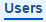
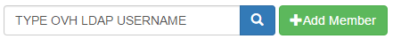

Managing User Access
Owner of the project can add/remove members to the project and can promote or demote the roles of existing users.
A member when added to the project he/she can be granted anyone of the below role:
- Guest: Guest has access only to pull docker images for a specified project.
- Developer: Developer has push and pull docker images privileges for a project.
- ProjectAdmin: When creating a new project, you will be assigned the "ProjectAdmin" role to the project. Besides push-pull docker images privileges, the "ProjectAdmin" also has some management privileges, such as adding and removing members.
To add or remove a member follow the following steps:
- Step 1: Login to HCL Private Docker Registry
- Step 2: Click on
 which is available in the header, then click on respective project.
which is available in the header, then click on respective project. - Step 3: Then click on  to manage users - edit the roles of existing users, delete the user access to project and to add a new user you need to search that user in the text box  then click on add member.

[ NOTE: Only those users who have made atleast one successful login into HCL Private Docker Registry via web browser are eligible to be member of a project. ]
Copyright © HCL Technologies - All Rights Reserved.